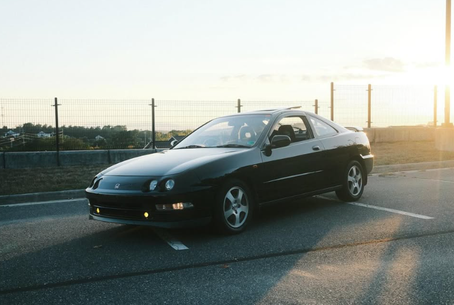

My car is a 1993 Honda Integra Si-VTEC. It is a JDM (Japanese Domestic Market) car meaning that it is actually from Japan. This results in a lot of fun little things about it, as well as some major differences, the largest of which being that the steering wheel is on the other side. In the US, this car was actually released as an Acura, but that brand doesn't exist over there it is only Honda. Other little factory options that came with the car were a sunroof, yellow fog lights (rare), some cool branded purple seat covers (rarest), and many others. That is a lot of stuff so I think it's best now to just show you my car.
